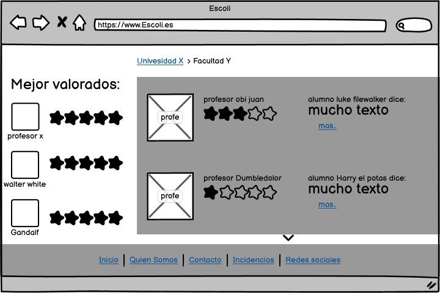

La pantalla principal constará de un menú con unas ventanas para elegir la universidad a la que se quiere acceder. También hay buscador por el cual el usuario podrá encontrar al profesor deseado.
Esta página contiene una lista de las facultades disponibles de la universidad elegida. Cada facultad está acompañada del profesor mejor valorado de la misma.

En esta página se publicarán todos los comentarios relacionados con los profes de esa facultad. Así mismo, será visible un apartado con los profesores mejor valorados.
Esta página mostrará el perfil de un usuario alumno. En ella saldrá su nombre, una biografía, sus amigos y un muro con sus comentarios (que puedes filtrar o buscar por profesor). También saldrán los comentarios más valorados. Si el que ve la página es ese mismo usuario tendrá disponible el acceso a una página para editar su perfil y su cuenta.
HAY QUE BORRAR LOS BOCETOS ANTERIORES
FALTAN LOS SIGUIENTES Bocetos
PERFIL profesor
comentarios/valoraciones
alta/baja de universidades o facultades
alta/baja de profes
gestion de encuestas